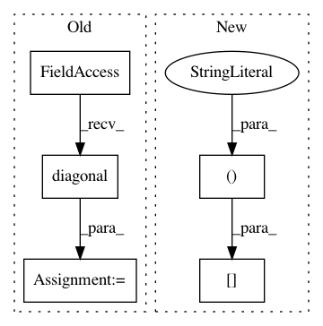

e4c6f8fd1d3ac456442b94d8d70e55272be90156,unet3d/utils/utils.py,,resize,#Any#Any#Any#,65
Before Change
def resize(image, new_shape, interpolation="continuous"):
image = reorder_img(image, resample=interpolation)
zoom_level = np.divide(new_shape, image.shape)
new_diagonal = (image.affine.diagonal()[:3] / zoom_level).tolist() + [1]
new_affine = np.copy(image.affine)
np.fill_diagonal(new_affine, new_diagonal)
new_data = zoom(image.get_data(), zoom_level)
return new_img_like(image, new_data, affine=new_affine)
After Change
interpolation=interpolation)
new_affine = np.copy(image.affine)
np.fill_diagonal(new_affine, new_spacing.tolist() + [1])
new_affine[:3, 3] += calculate_origin_offset(new_spacing, image.header.get_zooms())
return new_img_like(image, new_data, affine=new_affine)
In pattern: SUPERPATTERN
Frequency: 3
Non-data size: 5
Instances
Project Name: ellisdg/3DUnetCNN
Commit Name: e4c6f8fd1d3ac456442b94d8d70e55272be90156
Time: 2018-03-16
Author: david.ellis@unmc.edu
File Name: unet3d/utils/utils.py
Class Name:
Method Name: resize
Project Name: nipy/dipy
Commit Name: 48b66192da4f40b8918168b39103b00a93453245
Time: 2014-09-23
Author: mrbago@gmail.com
File Name: dipy/tracking/local.py
Class Name: LocalTracking
Method Name: _generate_streamlines
Project Name: epfl-lts2/pygsp
Commit Name: 982812930b16bd22b6b887c9b7bc4f7754458bc5
Time: 2015-10-01
Author: lionel.martin@epfl.ch
File Name: pygsp/graphs/gutils.py
Class Name:
Method Name: check_connectivity